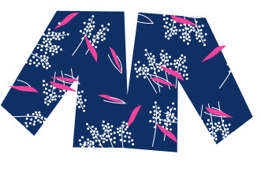

The article, Game Design
UX Best Practices, talked about things that game designers should keep in mind when developing
games. These include accessibility and things that would aid better user experience. The article is
mostly referring to mobile games. As a game designer, you would want elements in your game to be easily
reached with a good level of comfortability. I learned that it's good to keep things at a good size and
simple. If words are too small, it would be too difficult to read, especially on smaller screens.
Sliders are very useful and handy, as it is self-explanatory to how it functions for users. I also
learned that users would click the X button on instinct, so it is better to not place it on the
top-right corner of pop-ups. Instead, it is better to have a button with text on the bottom of the
pop-up.
Every Picture - Visual Thinking Analysis
Luminous - Michelle Lin, 2021
The image above is a sketch of the character, "Luminous" from the MMORPG "Maplestory". Maplestory played
a big part in my life growing up. I have always been a shy and timid person, so Maplestory helped me
open up and socialize. I've made countless friends in the game and I'm glad to have been able to face my
social anxieties through Maplestory. I have always loved playing video games and I have always loved to
draw. I wanted to combine both video games and art together for my collection. Each game presented in my
collection has some sort of significance in my life, and they all helped shape who I am today.

Vintage Blouse - Jennifer Jeon, 2021
The image above is of a vintage blouse, created by Jennifer Jeon. She wanted to create her graphics in
Figma and the theme of her project is about the items that she had thrifted. This blouse, possibly
originating from the 70's, was one of the first things that she had ever thrifted for the past two
years. She thrifted this in London when studying abroad and it sparked her interest in thrifting. There
could be many mysteries to this blouse -- What is this blouse's story? Where has it been? Thrifting had
allowed Jennifer to have a sustainable hobby while also curating her individuality and developing her
personal style.
Every Picture - Reading, Research, and Response
The website that I chose to analyze was Umami Land,
and I chose this one because I love Japanese food and wish to visit the country one day to try all of
their amazing foods! Upon entering the website, I was immediately captured by the cute and mesmerizing
animated background. I love the sounds and music of this website! The "start" button in the middle is
inviting and makes a cute animation when you hover over it. After clicking on it, you realize that the
background is actually part of a 3-D space that shifts over to another scene. A giant onigiri greets you
and allows you to click on the different foods available on your screen. Upon clicking on one, it would
give you a short description of the food, a "learn more" button, and a button for places that offer that
specific food. You can also travel to different parts of this world to discover even more food, and the
whole experience is fun and cute. My only qualm about this website is that big animations are heavy and
may take up a lot of your CPU usage, making it very laggy or slow. Other than that, I am totally
enamored by this design!
Best Practices for Modals, Overlays, and Dialog Windows
Modals, overlays, and dialog windows are user interface elements that have evolved into these annoying
pop-up windows that users encounter daily while browsing the web. The purpose of these windows is to
grab the user's attention to fulfill a task. The first instinct of many users is to find the "X" button
to close it out. Best practices of creating a good modular window include giving the user some breathing
room. This means to not surprise them, make accessibility easy, and not confuse them. I learned to keep
these windows simplified and straightforward. As developers, we would not want our users to be
frustrated and annoyed with these features.
Best Practices for Form Design
Upon reading the article about "Best Practices for Form Design", there were many things that I learned
or found interesting. Many of the tips given were about what we can do as designers to limit the
information given to the user. This includes making a one-column layout to make it easier for users to
process information or including only relevant information in the content. Other tips include breaking
things down into digestible steps for the user to process or asking less-complex questions first. I
thought that these tips were really useful, and made me think about how I can integrate these into my
own work. It made me put myself into the perspective of the user and see how they would process
information. This would help me in the future so that I wouldn't overwhelm the audience.